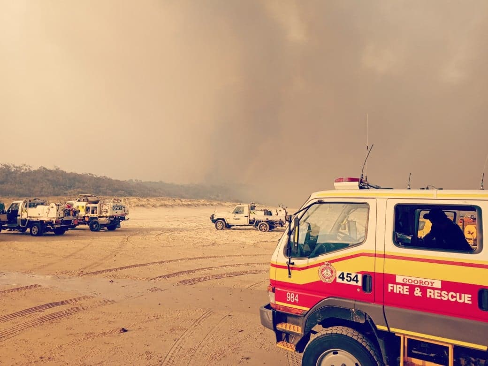

Coronavirus in Ireland: Less than 1 in 3 schools requested virus testing from public health teams
Less than one in three schools has requested testing from public health teams since November, but unions have said that classrooms remain unsafe.
The HSE’s Covid-19 mass testing report for schools revealed that only 1,137 special, primary and post-primary schools engaged with the HSE’s school contact tracing and testing system up to January 2. There are 3,971 schools registered in Ireland
'Catastrophic' bushfire burns half of Queensland's Fraser Island and threatens ecological disaster
The fire on the world’s largest sand island, also known as K’gari, has been burning for six weeks and is encroaching on areas with 1,000-year-old trees

Source: theguardian.com
Covid: WHO team investigating virus origins denied entry to China
A World Health Organization (WHO) team due to investigate the origins of Covid-19 in the city of Wuhan has been denied entry to China.
Two members were already en route, with the WHO saying the problem was a lack of visa clearances.
However, China has challenged this, saying details of the visit, including dates, were still being arranged.
The long-awaited probe was agreed upon by Beijing after many months of negotiations with the WHO.
Source: bbc.com
A second coronavirus vaccine developed in India is set to enter phase three clinical trial ‘very, very soon’
SINGAPORE — Indian drugmaker Cadila Healthcare is about to start a phase three clinical trial for a potential coronavirus vaccine, its chairman told CNBC.
“We’re now moving into phase three, which is going to start very, very soon,” Pankaj Patel told CNBC’s “Street Signs Asia” on Tuesday.
He said the trial will involve about 30,000 volunteers and will take about three to three-and-a-half months to complete.
The pharmaceutical company, which is also known as Zydus Cadila, said Sunday that it received approval from India’s drug regulator to begin the phase three clinical trial after earlier studies found its DNA vaccine candidate to be “safe, well tolerated and immunogenic.”
Source: cnbc.com
Qasem Soleimani: US strike on Iran general was unlawful, UN expert says
Soleimani died along with nine other people in a drone strike near Baghdad airport in Iraq in January.
A report by the UN's special rapporteur on extrajudicial killings, Agnes Callamard, says the US had not provided sufficient evidence of an imminent threat to life to justify the attack.
The US state department accused her of "giving a pass to terrorists".
Last week, Iran issued arrest warrants for US President Donald Trump and 35 others on charges of murder and terrorism in connection with the killing.
Source: bbc.com